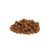
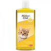

Уход за котами: Как создать комфорт и здоровье для вашего питомца
Питание
Правильное питание — это основа здоровья вашего кота. Оно должно содержать все необходимые питательные вещества, чтобы обеспечить кота энергией, поддерживать его иммунитет и здоровье.
Вот список необходимых элементов правильного питания:
- Белки: Важны для мышц и тканей. Кошки — облигатные хищники, поэтому белок должен составлять значительную часть их рациона.
- Жиры: Источник энергии, поддерживают здоровье кожи и шерсти.
- Витамины и минералы: Участвуют в метаболических процессах, важны для костей, зрения и иммунитета.
- Чистая вода: Кошки склонны пить мало, поэтому важно обеспечить их постоянным доступом к свежей воде.
Пример ежедневного рациона:
- Утро: Влажный корм, богатый белком, чтобы поддерживать энергию.
- День: Сухой корм для укрепления зубов и поддержания гигиены полости рта.
- Вечер: Смешанный корм или легкая порция влажного корма перед сном.
Не забывайте учитывать возраст, вес и уровень активности вашего кота при подборе корма. Поговорите с ветеринаром, чтобы подобрать оптимальный рацион для вашего питомца.
Гигиена и уход за шерстью
Уход за шерстью не только помогает поддерживать её красоту, но и снижает количество шерсти, попадающей в желудок кота при вылизывании.
Вот несколько советов по уходу за шерстью:
- Расчесывание: Регулярно вычесывайте кота, особенно длинношерстных пород. Это поможет избежать образования колтунов и снизит линьку.
- Шампуни для котов: Используйте специальные шампуни для кошек для купания. Кошек купают редко, но иногда это необходимо, особенно если они сильно испачкались.
- Стрижка когтей: Регулярно подстригайте когти, чтобы предотвратить повреждение мебели и случайные травмы.
- Уход за глазами и ушами: Протирайте глаза и уши влажными ватными дисками для предотвращения воспалений и инфекций.
Гигиенический уход помогает сохранить кота здоровым и предотвращает возможные проблемы, связанные с шерстью и кожей.
Медицинский уход
Регулярные визиты к ветеринару — это залог долгой и здоровой жизни вашего кота. Ветеринарный уход включает профилактические осмотры, прививки и лечение при необходимости.
- Прививки: Прививки защищают кота от инфекционных заболеваний, таких как бешенство, вирусные инфекции и др.
- Профилактические осмотры: Рекомендуется посещать ветеринара хотя бы раз в год для проверки общего состояния здоровья.
- Обработка от паразитов: Регулярная обработка от блох и гельминтов важна для поддержания здоровья кота.
- Стерилизация/кастрация: Этот процесс помогает контролировать популяцию и уменьшает риск некоторых заболеваний.
Внимательное отношение к здоровью кота и регулярные медицинские осмотры помогут избежать серьезных заболеваний и улучшить качество его жизни.
Рекомендуемые продукты и принадлежности для ухода
| Продукт | Изображение | Где купить |
|---|---|---|
| Качественный сухой корм |  | Petshop.ru |
| Шампунь для котов |  | ZooExpress |
| Игрушки для котов | Catsy.ru |